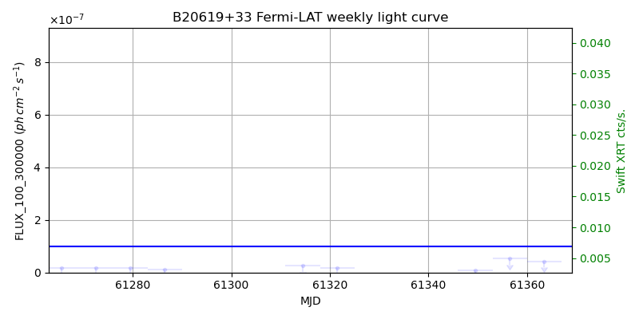

LAT Lightcurve site: https://fermi.gsfc.nasa.gov/ssc/data/access/lat/msl_lc/source/B2_0619p33
Swift site: https://www.swift.psu.edu/monitoring/source.php?source=B20619+33
NED: Query
Time of last update of this page: UT: 2026-11-20 16:17 (MJD: 61364.679)
| Property | Value |
|---|---|
| R.A. | 6:22:52.32 |
| Dec. | 33:26:09.6 |
| z | 1.062 |
| 3FGL SpectrumType | LogParabola |
| 3FGL PL Index | |
| 3FGL Flux_100_300000 | 9.92e-08 1 / (s cm2) |
| 3FGL Flux_1000_300000 | 7.63e-09 1 / (s cm2) |
| 3FGL Flux >200 GeV | 8.46e-12 1 / (s cm2) |
| 3FGL Extrap. Crab >200 GeV | 0.04 |
| 3FGL Flux After EBL Absorption >200GeV | 9.86e-14 1 / (s cm2) |
| 3FGL EBL Crab Fraction >200GeV | 0.00 |
| MJD | dMJD | Flux | dFlux | Frac3FGL | FracCrab>200GeV | EBLFracCrab>200GeV |
|---|---|---|---|---|---|---|
| 61358.50 | 0.50 | 5.11e-07 | 0.00e+00 | 0.00 | 0.00 | 0.00 |
| 61359.50 | 0.50 | 3.54e-07 | 0.00e+00 | 0.00 | 0.00 | 0.00 |
| 61361.50 | 0.50 | 1.40e-07 | 0.00e+00 | 0.00 | 0.00 | 0.00 |
| 61362.50 | 0.50 | 2.71e-06 | 0.00e+00 | 0.00 | 0.00 | 0.00 |
| 61363.50 | 0.50 | 1.08e-06 | 0.00e+00 | 0.00 | 0.00 | 0.00 |

| MJD | dMJD | Flux | dFlux | Frac3FGL | FracCrab>200GeV | EBLFracCrab>200GeV |
|---|---|---|---|---|---|---|
| 61286.50 | 3.50 | 1.26e-08 | 0.00e+00 | 0.00 | 0.00 | 0.00 |
| 61314.50 | 3.50 | 2.68e-08 | 0.00e+00 | 0.00 | 0.00 | 0.00 |
| 61321.50 | 3.50 | 1.64e-08 | 0.00e+00 | 0.00 | 0.00 | 0.00 |
| 61349.50 | 3.50 | 8.44e-09 | 0.00e+00 | 0.00 | 0.00 | 0.00 |
| 61356.50 | 3.50 | 5.39e-08 | 0.00e+00 | 0.00 | 0.00 | 0.00 |

| MJD | dMJD | Flux | dFlux | Frac3FGL | FracCrab>200GeV | EBLFracCrab>200GeV |
|---|---|---|---|---|---|---|
| 61358.50 | 0.50 | 1.71e-08 | 0.00e+00 | 0.00 | 0.00 | 0.00 |
| 61359.50 | 0.50 | 1.86e-08 | 0.00e+00 | 0.00 | 0.00 | 0.00 |
| 61361.50 | 0.50 | 2.15e-08 | 0.00e+00 | 0.00 | 0.00 | 0.00 |
| 61362.50 | 0.50 | 1.28e-07 | 0.00e+00 | 0.00 | 0.00 | 0.00 |
| 61363.50 | 0.50 | 1.74e-07 | 0.00e+00 | 0.00 | 0.00 | 0.00 |

| MJD | dMJD | Flux | dFlux | Frac3FGL | FracCrab>200GeV | EBLFracCrab>200GeV |
|---|---|---|---|---|---|---|
| 61286.50 | 3.50 | 5.75e-09 | 0.00e+00 | 0.00 | 0.00 | 0.00 |
| 61314.50 | 3.50 | 2.85e-09 | 0.00e+00 | 0.00 | 0.00 | 0.00 |
| 61321.50 | 3.50 | 2.23e-09 | 0.00e+00 | 0.00 | 0.00 | 0.00 |
| 61349.50 | 3.50 | 3.46e-09 | 0.00e+00 | 0.00 | 0.00 | 0.00 |
| 61356.50 | 3.50 | 2.72e-09 | 0.00e+00 | 0.00 | 0.00 | 0.00 |
--------------------------------------------------------- Using user-supplied coords: 6:22:52.32 33:26:09.6 2000 --------------------------------------------------------- FLWO UT night of: 2026-11-21 Local Sid. @ Midnight: 03:37 Sunset (-15.0) (local, UT): 18:33 01:33 Sunrise (-15.0) (local, UT): 05:47 12:47 Moonrise (local, UT): Moonset (local, UT): 03:40 10:40 Moon phase: 0.85 --------------------------------------------------------- AzTime LSID UT Obj_el Obj_az Mn_el Mn_az Sep. --------------------------------------------------------- 18:33 22:09 01:33 -6.0 44.2 47.9 117.4 83.5 19:03 22:39 02:03 -0.8 48.4 53.3 125.0 83.3 19:33 23:09 02:33 3.6 52.3 58.2 134.7 83.1 20:03 23:39 03:03 8.7 55.9 62.3 146.9 82.9 20:33 00:09 03:33 14.1 59.1 65.1 162.1 82.7 21:03 00:39 04:03 19.6 62.1 66.3 179.7 82.5 21:33 01:09 04:33 25.3 64.9 65.4 197.5 82.3 22:03 01:39 05:03 31.2 67.5 62.9 213.2 82.1 22:33 02:09 05:33 37.1 69.8 59.0 225.9 81.9 23:03 02:39 06:03 43.2 72.0 54.2 235.9 81.7 23:33 03:09 06:33 49.3 74.0 48.9 243.9 81.5 00:03 03:39 07:03 55.5 75.8 43.2 250.4 81.3 00:33 04:10 07:33 61.7 77.3 37.3 255.9 81.0 01:03 04:40 08:03 68.0 78.4 31.2 260.7 80.8 01:33 05:10 08:33 74.2 78.7 25.1 265.1 80.6 02:03 05:40 09:03 80.5 76.5 19.0 269.2 80.3 02:33 06:10 09:33 86.5 58.9 12.9 273.0 80.1 03:03 06:40 10:03 86.2 298.7 6.8 276.9 79.8 03:33 07:10 10:33 80.2 283.3 1.0 280.7 79.5 04:03 07:40 11:03 73.9 281.3 -4.9 284.7 79.2 04:33 08:10 11:33 67.7 281.6 -11.1 288.8 78.9 05:03 08:40 12:03 61.4 282.7 -16.8 293.2 78.6 05:33 09:10 12:33 55.2 284.3 -22.3 298.1 78.3 05:47 09:25 12:47 52.2 285.1 -24.8 300.5 78.2 --------------------------------------------------------- Dark hours >55 deg.: 1.89 srcstart (UT): 2026-11-21 10:40 srcend (UT): 2026-11-21 12:33